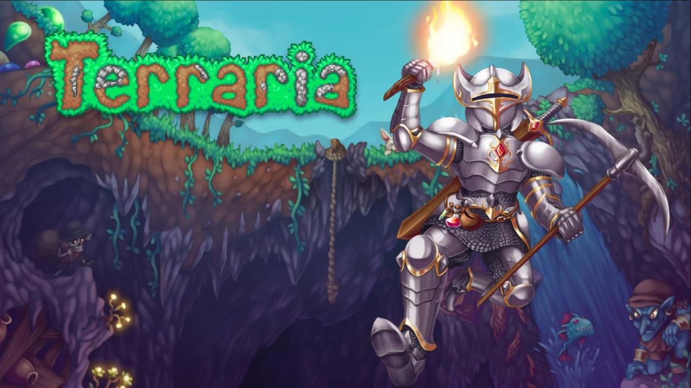

|  |
泰拉瑞亚（Terraria） 泰拉瑞亚，Re-Logic公司开发的一款高自由度的沙盒游戏。 《泰拉瑞亚》是冒险之地！是神秘之地！是可让你塑造、捍卫、享受的大地。在《泰拉瑞亚》，你有无穷选择。手指发痒的动作游戏迷？建筑大师？收藏家？探险家？每个人都能找到自己想要的。 从建造基本的藏身之处开始，接着挖掘矿石及其他资源。探索并制作超过 500 种各式魔法、远程、近战、和召唤武器，以及盔甲，借助它们与数百种不同的敌怪战斗。很快，你将直面十多个巨大的 Boss。还可以去钓鱼、骑上坐骑、找寻漂浮岛、为 NPC 建造房屋，有很多很多事情可以做。 背景设定 在完成角色自定义后，游戏就把玩家扔进了一个完全随机生成的像素世界中，手头的工具意味着玩家需要造东西、探索世界并打败怪物。 整个游戏世界都是可破坏的，破坏某些障碍物后，就可以找到各种资源比如石头、木材、铁矿或者其他装备，当然，在不断深入的同时，也会遇到各种怪物。游戏的主要任务就是让玩家利用各种资源按自己的想法创造出各种稀奇古怪的东西，所以这就让玩家充满了探索的动力。 地面生活有日夜交替。在早晨，玩家可以到处乱跑也可以建造各种庇护所等等；而当夜幕降临后，僵尸和各种眼球怪就会出现，要么杀死他们，要么就逃走。 地面惬意的生活让人流连忘返。但是，黑暗的地下才是真正刺激的地方。一些必需品玩家可以在地表找到，但稀有的材料只会出现在地下。地下世界就像是一部传统的2D动作游戏。从巨型史莱姆、骷髅、蠕虫到各种虫子，相当丰富多彩。 如果说地面的重点在于建造和探索，那么地下就是玩家战斗的地方。 Boss设定 游戏中大多数boss都可以被特定的合成物品或者掉落物品召唤出来，以方便玩家随时挑战boss。 值得一提的是血肉之墙，血肉之墙是游戏进程前期和后期的分界点。当玩家击败血肉之墙之后游戏会变得更加困难（也就是常说的肉后）。血腥/腐蚀化的出现可能使玩家失去NPC，大量新增的怪物会阻碍玩家探索的脚步，而新三矿的出现也为玩家提供了提升自身装备的台阶，让玩家以更强大的属性去对抗新出现的boss，迎接新的挑战。 游戏评测 《泰拉瑞亚（Terraria）》简约的画面背后拥有令人叹为观止的深度，无论是实事求是地讲，还是带着夸张的色彩说，都是如此。开始往里挖吧！（IGN评） |
| back |